STUDIES 01–03 / THE OBSERVATION EDITION
A slower
reading.
Twenty-four actual pages. The same source images, with a deliberate change of scale and pace.
A4 portrait · digital review edition · generated imagery
Not a press-certified file or a physical print run.
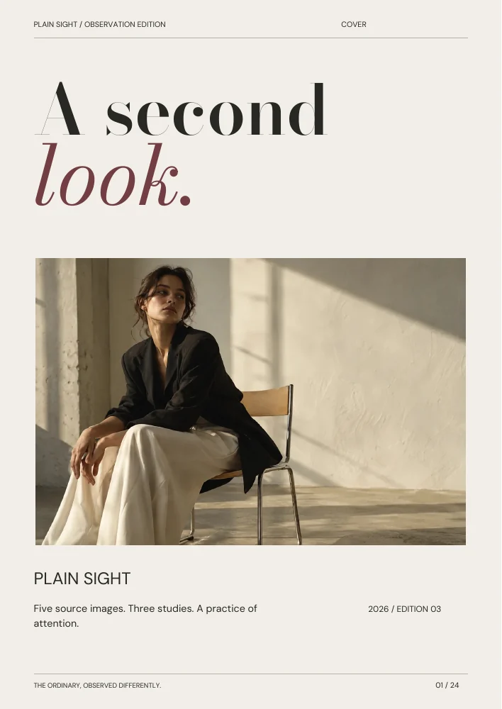
This preview could not load. Open the complete PDF.
THE ENTIRE EDITION
Every page,
in order.
Enter at any point. The page number in the address remembers your place.

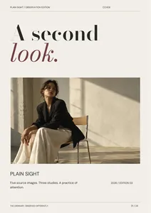
01 / A second look
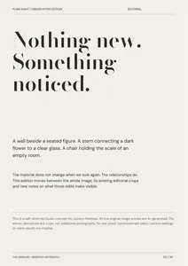
02 / Attention is a medium
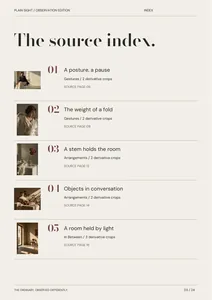
03 / Five sources, three studies
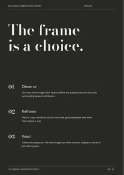
04 / Observe. Reframe. Read.
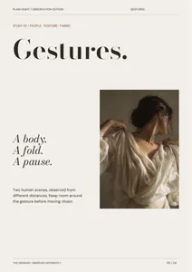
05 / Gestures
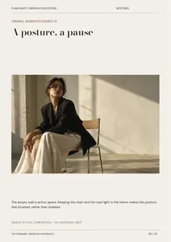
06 / A posture, a pause
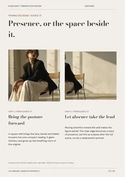
07 / Presence, or the space beside it.
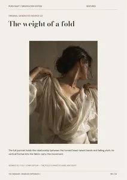
08 / The weight of a fold
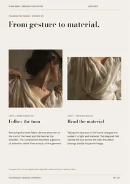
09 / From gesture to material.
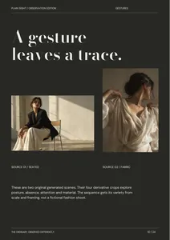
10 / Two scenes, one attention
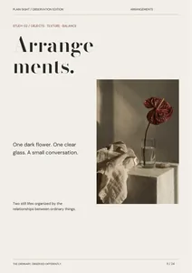
11 / Arrangements
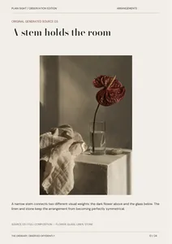
12 / A stem holds the room
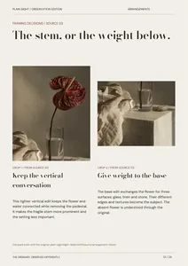
13 / The stem, or the weight below.
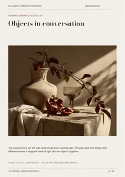
14 / Objects in conversation
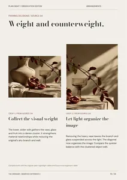
15 / Weight and counterweight.
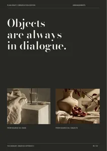
16 / A table is a small stage
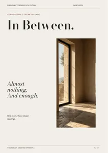
17 / In Between
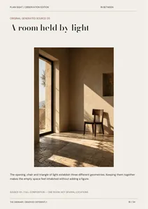
18 / A room held by light
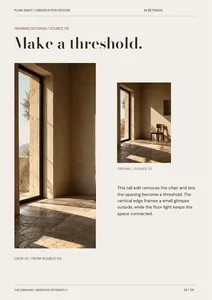
19 / Make a threshold
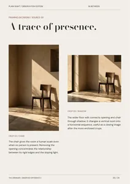
20 / Scale and the path of light
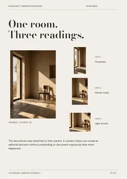
21 / One room, three edits
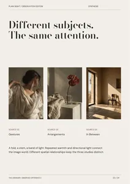
22 / The same attention
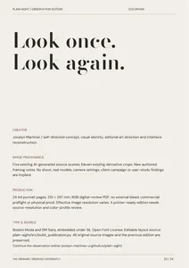
23 / A transparent edition
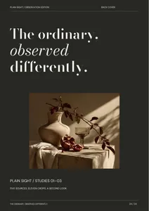
24 / The ordinary, observed differentlyTHE IDENTITY OUTSIDE THE READER
Type holds
its ground.
Six retained campaign compositions. Editable vector type and shapes, with embedded raster imagery. Concept artworks, not installed campaigns.